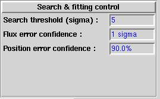
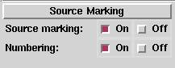

|  | Use these fields to set search thresholds etc. Isys will always fill in these with reasonable values, but the experienced user may want to change these. |
| These check boxes just controls what Isys does with the results of the search, ie whether the positions are marked, and if so whether they are individually numbered. |  |